The breakeven math, and what you should actually own. The money.
Foundations
Three memories. Three speeds. Confuse them and you waste money.
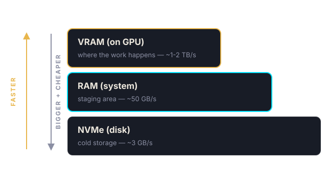
VRAM (on the GPU)
The GPU's private workspace. Everything that matters happens here. If your model doesn't fit in VRAM, it crawls or dies. This is the number you shop by: 16GB, 24GB, 32GB, 80GB.
RAM (system)
Staging area. Holds the dataset, the OS, and models while they load into VRAM. You need 2× your VRAM in RAM — cheap, so don't skimp.
Disk (NVMe)
Cold storage for models and output. A 7GB model loads at ~1-3 GB/s on NVMe. Slow disk = 2-minute startup every time the model reloads.
Rule of thumb: VRAM decides if it works. Bandwidth decides how fast. Disk decides how often you wait.
Foundations
VRAM is a bouncer, not a speedometer
Model weights must fit. An 8B LLM ≈ 5GB. A 14B ≈ 10GB (quantized). SDXL + LoRA ≈ 12GB. Video models ≈ 24-40GB.
Speed comes from bandwidth, not size. A 5090 (32GB, 1,800 GB/s) beats an A100 80GB (1,600 GB/s) at image work — even though it's "smaller."
Too little VRAM = offloading. The GPU shuffles data from RAM every step. 5× slower. This is why a 16GB card can't run a 32B LLM properly.
KV cache eats VRAM on LLMs. Long conversations need room beyond the model weights. A 24GB card = 14B model + comfortable cache.
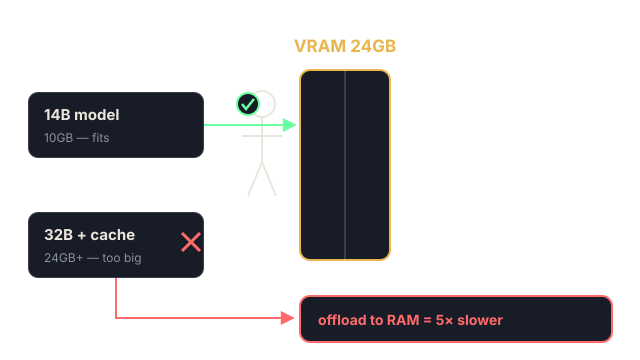
Foundations
Quantization: how a 14B model fits in 10GB
Weights are stored as numbers. 16-bit (FP16): 14B params ≈ 28GB. 8-bit: ~14GB. 4-bit (AWQ/GPTQ): ~10GB.
4-bit is the sweet spot for serving. Quality loss on story/chat workloads is small; the VRAM savings decide which card you rent.
Below 4-bit, quality falls off a cliff for nuance-heavy writing. Test before you ship on 3-bit.
KV cache is the hidden second tenant. Every active conversation keeps its context in VRAM. 20 concurrent players × long chats can eat as much as the model itself.
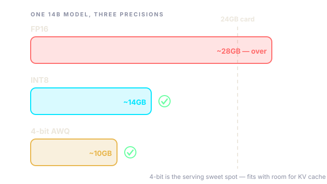
Shopping rule: model GB + cache headroom ≤ VRAM. That inequality picks your card.
Foundations
Reading a spec sheet: two numbers matter, the rest is marketing
Spec
What it is
When you care
VRAM (GB)
How much model fits
Always. First filter on every rental.
Memory bandwidth (GB/s)
How fast weights stream to cores
LLMs + images. Sets tokens/sec and images/hour.
Tensor cores / TFLOPS
Raw compute throughput
Training, video gen, big batches.
CUDA version / arch
Software compatibility
New frameworks (needs sm_90+ etc).
NVLink / multi-GPU interconnect
Cards talking to each other
Multi-GPU training only. Ignore for inference fleets.
Inference is bandwidth-bound: the GPU spends its life re-reading model weights. Training is compute-bound. That's why the same card ranks differently per job.
Foundations
The rental lineup, honestly assessed
Card
VRAM
Bandwidth
Typical $/hr
Best for
RTX 3080/3090
10/24GB
~760-940 GB/s
$0.15-0.30
Cheap image workers, 14B LLM serving (3090)
RTX 4090
24GB
~1,000 GB/s
$0.30-0.55
The fleet workhorse: images, LoRA training, 14B LLMs
RTX 5090
32GB
~1,800 GB/s
$0.50-0.90
Fastest consumer option; 32B LLMs, video gen
A100 40/80GB
40/80GB
1,555-2,039 GB/s
$0.80-1.60
LoRA training fleets, big models, fat KV caches
H100
80GB
~3,350 GB/s
$2.00-4.00
Serious training. Almost never worth it for inference.
Notice the pattern: consumer cards win on $/image and $/token. Datacenter cards win on VRAM size. Rent the champion of your specific job.
The Hidden Bottleneck
Transfer speed kills more jobs than weak GPUs ever will
Network varies 100× between hosts. I've seen 60 Mbps and 6,783 Mbps on the same platform. A 53GB transfer is 2 minutes on one and 2 hours on the other.
Region matters for inter-instance transfers. Cross-continent = 1 MB/s. Same region = 50+ MB/s. Move data host-to-host, never through your home connection.
PCIe barely matters for inference. x8 vs x16? Invisible for image gen. Matters for multi-GPU training only.
Check before you rent: network Mbps, reliability %, region. Not just the GPU name.
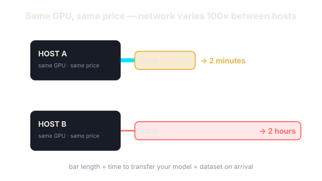
The Hidden Bottleneck
The data movement playbook
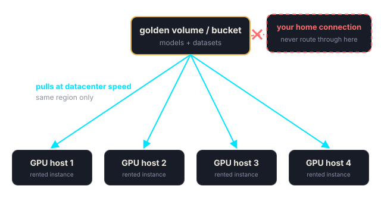
Rule 1: data lives near compute
Pick the host's region first, then the GPU. Your dataset's region is your region. Cross-continent transfers are a tax on every job.
Rule 2: seed once, reuse everywhere
Keep a "golden" storage volume or cloud bucket with models + datasets. New hosts pull from it at datacenter speed — not from your house.
Rule 3: compress what you sync
rsync -z, or tarball model outputs before moving. 30k PNGs move faster as a stream of archives than 30k individual files.
Rule 4: verify on arrival
curl huggingface.co, quick speedtest, disk space check. 60 seconds of checks beats discovering a dead network at hour 3.
Consumer hardware in someone's rack; reliability varies — that's what this course's ops section is for
Secure cloud
RunPod secure, Lambda, TensorDock
Mid
Datacenter-grade, better uptime, still pay-per-hour
Hyperscalers
AWS, GCP, Azure
Most expensive
Enterprise compliance and quotas — overkill for most indie workloads
Interruptible vs on-demand: spot/interruptible instances are 50-70% cheaper and can vanish mid-job. Great for resumable batch work, fatal for a live game server.
The strategy that works: community cloud for batch + training, secure/on-demand for anything players touch.
The Cheat Sheet
What you need for what
Job
Minimum
Sweet spot
Speed driver
LLM chat / story text
16GB (8B)
24GB (14B 4-bit)
Memory bandwidth
Image generation (SDXL)
16GB
24-32GB
GPU cores + more cards
LoRA training
24GB
40-80GB
VRAM size
Video generation
24GB
32-80GB
VRAM + architecture
TTS / voice cloning
8GB (CPU ok)
16GB
Small models, cheap
Golden rule: for batch work, 8 cheap cards beat 1 expensive card.
The Cheat Sheet
The 60-second listing check (do this before every rental)
1. VRAM ≥ model + headroom. The inequality from earlier. Non-negotiable.
2. Reliability ≥ 98%. Below that, expect the host to die mid-job.
3. Network down/up listed in Mbps. No number shown = assume it's bad.
4. Region matches your data. Same region as your volume/bucket.
5. RAM ≥ 2× VRAM, disk ≥ dataset + outputs. Cheap lines on the listing, expensive to get wrong.
6. Price vs the fleet alternative. Would N cheaper cards beat this one for this job?
Sixty seconds of checks. Zero 3am surprises.
Use Case · LLMs
Running LLMs: vLLM changes everything
8B model (Llama 3.1): fits a 16GB card. Fine for dev, weak for production stories.
14B 4-bit (Qwen 2.5 AWQ): ~10GB. The price-performance king — a 3090 at $0.25/hr serves hundreds of concurrent players.
32B 4-bit: ~20GB. Needs a 32GB card. Marginal quality gain over 14B in games.
vLLM batches requests — one 3090 handles 20-40 simultaneous users before anyone notices. Your card is mostly idle waiting for reads.
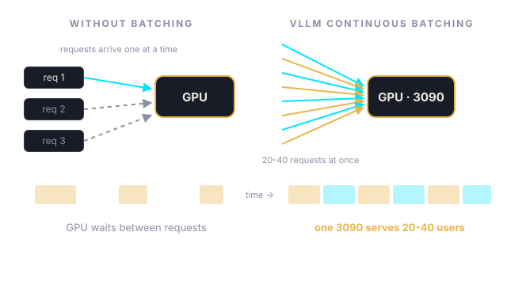
Real math: $0.25/hr serves 1,000+ active players.
Use Case · LLMs
Worked example: sizing a story-game server
Line item
VRAM cost
Why
Qwen 2.5 14B, AWQ 4-bit
~10GB
The model weights
KV cache: 30 players × ~4k tokens
~3-5GB
Every live conversation holds its context
vLLM overhead + CUDA graphs
~2GB
The serving engine itself
Safety margin
~4GB
Spikes, long sessions, future model bumps
Total
~20GB → 24GB card
A 3090/4090 at $0.25-0.45/hr
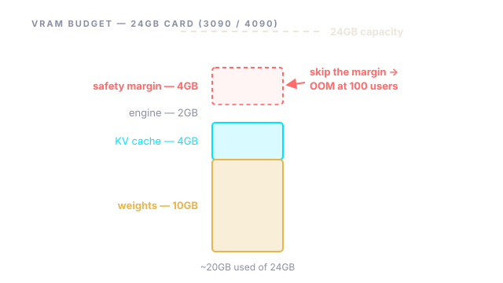
The pattern: weights + (players × context) + engine + margin. Size the card from the workload, never from the model name.
Use Case · Images
Image generation: scale out, not up
SDXL 1024px + LoRA ≈ 12GB per worker. Any 16GB+ card works.
One 5090: ~1,400 scenes/hour. One 3080: ~700. One 4090: ~900.
8× 4090 beats 1× H100 for batch generation — and costs less per image.
Batch smart: group jobs by LoRA so the model stays hot (my fleet went 3× faster with this one trick).
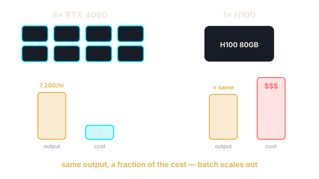
Real numbers: 30,000 scenes in 5 hours for ~$27.
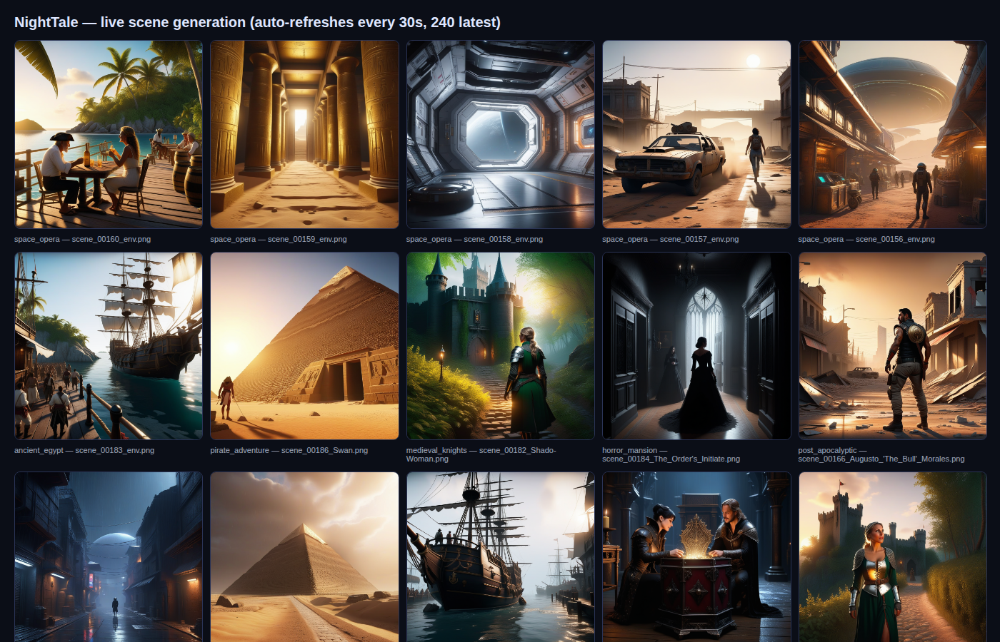
The actual scene pipeline mid-run — thousands of character-consistent scenes generated on an 8-GPU fleet.
Use Case · Images
Fleet design: the LoRA-hot queue
The problem: loading SDXL + a LoRA takes 30-60s. Naive round-robin reloads models constantly — your fleet spends its life loading, not generating.
The fix: pin jobs to workers by model. Worker 3 runs character A jobs all night. The model loads once, stays hot, generates back-to-back.
The queue: one folder/database of pending jobs per game. Workers pull the next job matching their loaded LoRA, write output + metadata, mark done.
The result: 3× throughput on identical hardware. Zero new spend — just routing.
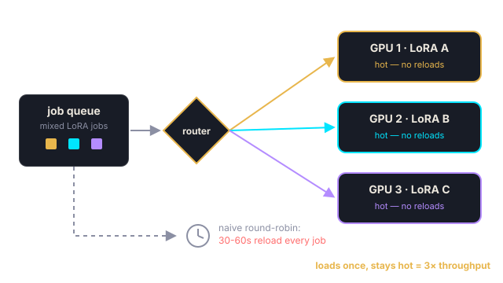
Architecture in one line: one worker per GPU, one LoRA per worker, one queue per game.
Use Case · Training
Training LoRAs: VRAM is the wall
SDXL LoRA training: 24GB works, 40GB is comfortable, 80GB is luxurious.
8× A100 40GB trained 246 character LoRAs at ~21 min each, 16/hour across the fleet.
Consumer cards (3090/4090) train fine at 24GB — just slower per job.
Training is a burst job. Rent big, finish, destroy. Never own training hardware unless you train weekly.
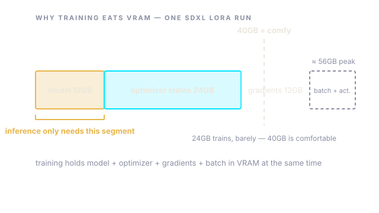
Use Case · Training
The 21-minute LoRA: what's inside
Dataset
20-40 generated images of the character, varied angles/expressions/lighting. Consistency of identity, variety of everything else. Captions describe the variable parts, never the identity.
Hyperparameters
SDXL, ~1,500-2,500 steps, batch 1-4, 4-bit/base FP16. Rank 16-32 is plenty for a face. More rank ≠ more likeness — it's more overfitting.
Time math
~21 min on an A100 40GB. ~35-45 min on a 4090. Cost per LoRA: well under $1 either way.
Quality gate
Every LoRA generates a fixed test grid (same seed, same prompts) before joining the fleet. Bad LoRAs get retrained, not shipped.
The asset isn't the GPU time — it's the repeatable recipe. Write yours down once; every future character is a rerun.
Use Case · Video
Video generation: the honest picture
The VRAM floor is real. LTX-Video / Wan-class models want 24GB minimum, 32-80GB for comfortable quality and length.
Architecture matters as much as size. Newer video models get more seconds-per-GB than last year's at the same VRAM — check model requirements, not folklore.
Throughput is the constraint. A 5s clip ≈ minutes of GPU time. Budget video = batch fleets again, not one monster card.
Cost reality: a clip on a rented 5090 via ComfyUI lands at ~$0.02-0.05 — if your pipeline is tuned. Untuned, it's 10× that.
Same playbook as images: queue, batch, fleet — then tune the pipeline before you touch the hardware budget.
Use Case · Voice
TTS and voice cloning: the cheap seat
Small models, small cards. Modern TTS runs on 8GB, some on CPU. This is the one workload where the GPU is almost an afterthought.
Latency is the real spec. For games, voice that arrives 5s after the text feels broken. Target real-time-factor < 0.3 and stream the audio.
Voice cloning = one-time cost. Clone the narrator once, serve forever. Store the voice model with your other assets.
Don't rent a dedicated box for this. Colocate TTS on the same instance as your LLM — they idle at different times.
Operations
Batch jobs that don't die at 3am
Structure
One worker per GPU, one game/dataset per worker. Simple resumable jobs: skip what's already done, write metadata as you go, log everything.
Watchdog
A tiny script that checks: one master alive, no duplicate workers, GPU util healthy. Restart what dies. My fleet self-heals via cron every 15 min.
Lock files
flock -n prevents duplicate masters. I once ran 3 trainers on 4 GPUs at ⅓ speed for hours. Never again.
Sync out continuously
rsync results home every 60s. If the host dies (it will), you lose seconds, not hours.
Operations
The entire reliability stack, in code
# 1. One master, ever — the script refuses to double-run
exec 9>/tmp/master.lock
flock -n 9 || { echo "already running"; exit 1; }
# 2. Workers: skip finished work, log everything
for job in pending_jobs(); do
[ -f "out/$job.done" ] && continue # resumable by design
run_job "$job" && touch "out/$job.done"
done
# 3. Watchdog, via cron every 15 min — revive what's dead
*/15 * * * * pgrep -f master.sh >/dev/null || /opt/fleet/master.sh
# 4. Sync out every 60s — hosts die, results don't
while true; do rsync -az out/ home:results/; sleep 60; done
That's it. No orchestrator, no Kubernetes, no framework. Four patterns you can read in one screen.
Operations
Hosts die. Plan for it.
Reliability % is the most important number on the listing. 93% means your 8-hour job dies at hour 5. 99.9% costs 10% more and saves the whole job.
Kill-and-retry is a feature, not a failure. Every long job I run is resumable by design. New host, rerun the script, it skips finished work.
Provisioning hangs happen. If a template download stalls 30+ minutes, kill the download process — provisioning usually completes anyway.
Some hosts can't reach HuggingFace. Test on arrival: curl huggingface.co. No reach? Move the data from a host that can.
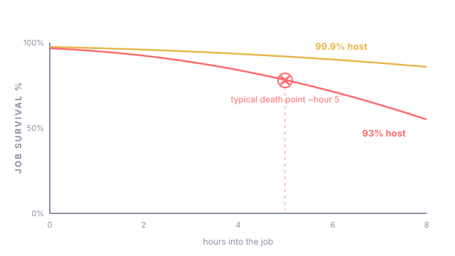
The Money
When to rent, when to buy
Rule
Decision
Breakeven on a 5090 ($2,500)
~6 months of 24/7 rental. Under that → rent. Over → buy.
Burst jobs (training, batch gen)
Always rent. Pay $50 for a weekend, not $2,500 forever.
Always-on production (your game server)
Buy when revenue covers it. One 5090 at home beats $1,000/month rent.
Unproven ideas
Always rent. Prove it earns before you own it.
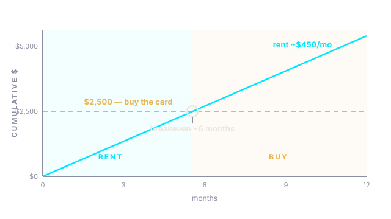
My rule: rent until the workload is permanent, predictable, and profitable. Then buy exactly one card for it.
The Money
Receipts: what the numbers actually were
Project
Setup
Wall time
Cost
Unit cost
30,000 game scenes
8× 4090-class fleet
~5 hours
~$27
$0.0009 / scene
246 character LoRAs
8× A100 40GB
~15 hours
~$80-130
< $0.50 / model
LLM story server
1× 3090, vLLM, 14B-AWQ
24/7
~$180/mo
~$0 / player at scale
Ad video clips
1× 5090, ComfyUI
per clip
—
$0.02-0.05 / clip
The whole platform — 15 games, 246 models, 30k+ scenes — cost less than one RTX 5090.
Asset Discipline
What you keep forever (it's never the hardware)
Models and LoRAs — your trained assets. Three copies: local, NAS, cloud. Hardware dies; these are the business.
Pipelines as code — every script, every config, every watchdog. Rebuild any host in an hour.
Metadata — which prompt made which image. Regeneration without it means starting over.
Nothing on the instance. Treat every host as temporary. If it matters, it's synced off within 60 seconds.
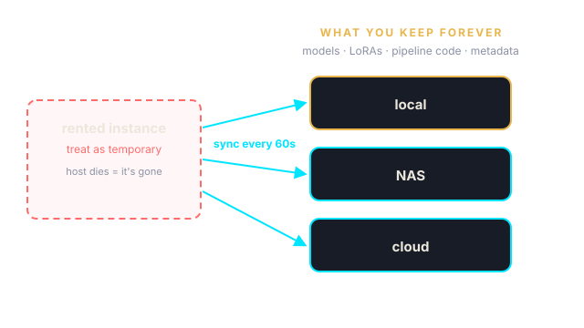
Operations
Rented-box hygiene
Assume the host is hostile and the neighbors are curious. Community hardware = someone else's machine. No personal SSH keys with broad access; use a throwaway keypair per project.
API keys live in env vars or secret files you sync in — never baked into images, scripts, or git repos pushed to the host.
Encrypt archives in transit to untrusted storage if the content matters (gpg -c or an encrypted bucket). Your LoRAs are your moat; treat them like it.
Wipe on departure. Secure-delete datasets and outputs before destroying the instance. The next renter gets the disk.
The Alternative
"But Higgsfield does it for me"
Video clip on a rented 5090 (LTX-Video, ComfyUI): ~$0.02-0.05 each, any style, any character, yours forever.
Subscription platforms: fixed styles, watermarks, credit limits, and you build their moat, not yours.
The skills in this course transfer to every AI workload — not just one vendor's app.
LoRA-locked character in a story scene — generated for fractions of a cent.
Dark fantasy world scene from the same pipeline.
Rent the hardware, own the pipeline.
Take This With You
The whole course in 6 lines
VRAM decides if it works. Bandwidth decides how fast.
Batch jobs: many cheap cards > one big card.
Check reliability + network before the GPU name.
Make every job resumable. Hosts die.
Rent bursts. Buy only permanent, profitable workloads.
Own the models, the pipeline, and the metadata. Never the host.
Now Build
Your first rental, this week
Pick one job from the cheat sheet — the smallest one that matters to you.
Run the 60-second listing check, rent the sweet-spot card, and time how long setup actually takes.
Make the job resumable before you make it fast. Then let it run overnight.
Start here: cloud.vast.ai — run the 60-second check, rent one card, run one job overnight.
See it running live: nighttalegames.com — 15 games, 246 models, 30k+ scenes, all on this playbook.
‹
›
‹ PrevNext ›Notes NPop out S
Speaker Notes00:00N close · S pop out · T reset timer